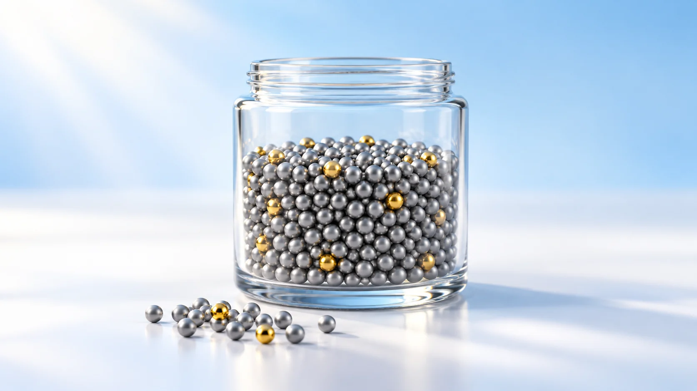
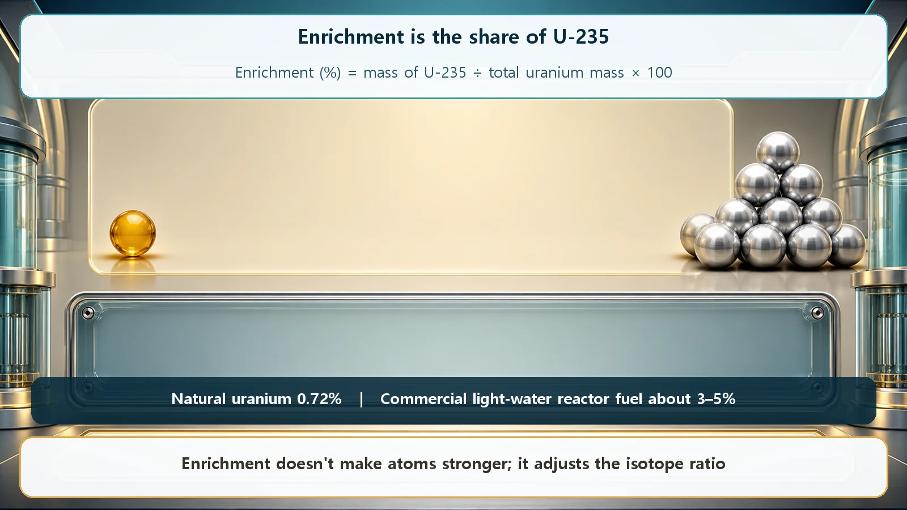
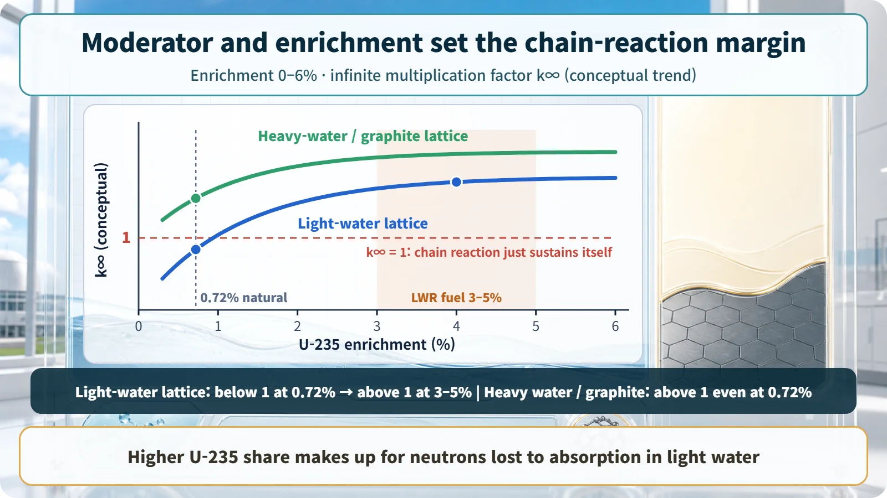

Long-Term Core Behavior & Fuel Cycle · 154
Not Boiled Down, Just Rebalanced — Why Power Reactors Need Uranium Enrichment
Enrichment adjusts the ratio of two nearly identical isotopes so that water-moderated reactors can sustain a chain reaction and run a full cycle.

Uranium enrichment doesn't concentrate or strengthen uranium; it raises the share of U-235 from the natural 0.7% to roughly 3–5%. Reactors moderated and cooled by ordinary water need that higher share to make up for the neutrons the water absorbs, while heavy-water and graphite reactors can run on natural uranium.
What comes to mind when you hear the word "concentrate"? For many people it's frozen orange juice concentrate, or a stock simmered for hours until it turns rich. Boil off the water and the flavor gets stronger: that's the kind of concentrating we know. So "uranium enrichment" can sound like boiling uranium down into something stronger and more dangerous. It isn't. Uranium enrichment doesn't boil anything down or make anything stronger. It is closer to slightly changing the ratio between two almost identical siblings. Let's look at what enrichment means and why nuclear power plants need it.
Two siblings who look almost exactly alike
Uranium contains two siblings that are nearly impossible to tell apart: U-235 and U-238. Both are uranium, and chemically they're practically twins. The only difference is that their nuclei hold a different number of neutrons, three apart, so their weights differ very slightly.
Yet in a reactor this tiny difference is enormous. Only the older sibling, U-235, responds to a slow neutron by splitting and releasing energy. The younger one, U-238, usually just swallows the same neutron quietly and rarely splits. For a reactor to make heat, there has to be enough of the "splits easily" kind, and the problem is that U-235 is very rare in nature. In mined uranium, only about 7 atoms in 1,000 (about 0.7%) are U-235; nearly all of the other 993 are U-238. The star of the reaction makes up less than 1% of the population.
So uranium enrichment does exactly one thing: it raises the share of rare U-235 above its natural level. That's all. It doesn't make uranium chemically purer or rebuild its atoms into something stronger. It simply lifts the older sibling's share from 0.7% to a few percent: a ratio adjustment. Enrichment, as a number, is the share of all the uranium that is U-235.
In one line:
Enrichment (%) = amount of U-235 ÷ (amount of U-235 + U-238) × 100
In nature this value is about 0.7%; for power reactor fuel it is raised to roughly 3 to 5%.

Why bother raising the ratio?
A natural question: there is some U-235 even at 0.7%, so why go to the trouble of raising it? The answer has to do with the water that works alongside the fuel.
Most nuclear power plants (pressurized water reactors and boiling water reactors) use ordinary water. It does two important jobs: it slows the very fast neutrons born in fission down to the right speed so the next fission happens easily (moderation), and it carries heat out of the core (cooling). A helpful worker. But this water has one small side effect: now and then it quietly absorbs a passing neutron. Not many, but it steadily eats into the precious neutrons the reaction needs.
Think of it as crossing a stream on stepping stones. One fission leading to the next is like a neutron crossing a stream to the far bank, and to cross it has to step on U-235 stepping stones. Meanwhile the current (the water's neutron absorption) occasionally sweeps a neutron away. If the U-235 stones are spaced as sparsely as 0.7%, the neutron gets swept off before it reaches the next stone, and the chain reaction can't keep itself going. It fizzles.
Enrichment lays the stepping stones a little closer together. With U-235 raised to 3–5%, a neutron has a good enough chance of reaching the next stone and getting across even if the current takes a few. Only then does the chain reaction keep itself going steadily: the self-sustaining state.
Interestingly, the story changes if the moderator barely swallows neutrons at all. Reactors moderated by heavy water or graphite lose so few neutrons that they can sustain a chain reaction on unenriched natural uranium (0.7%). So enrichment isn't an absolute gateway that all nuclear power must pass through. It is a design choice that makes up for neutron losses in reactors that use ordinary water as moderator and coolant. Because most of the plants we see use water, enrichment is widely needed.

What enrichment decides: how long the reactor can run
Enrichment doesn't only decide whether a chain reaction works. It also governs how long the reactor can run before the fuel is replaced.
Picture the initial U-235 as a car's fuel tank. The more you fill up before setting off, the farther you can go before the next gas station. Likewise, the higher the U-235 share in fresh fuel, the bigger its stock of "fission capital," so the reactor can run longer and extract more energy before refueling. That's why designers choose an enrichment to match the desired operating cycle (for example, running about a year and a half on one load of fuel). Enrichment is the starting point of core design and operating plans.
A few easy mix-ups
Enrichment is not burnup. Enrichment is the starting condition before the fuel goes in: how much U-235 it holds at first. Burnup is the cumulative energy the fuel has actually produced since. One is the starting line, the other is the track record.
Enriched uranium is not more radioactive, and it doesn't explode on its own. As we saw, enrichment only nudges up the share of the easily split isotope; it doesn't make atoms more dangerous. Low-enriched uranium for power reactors (3–5%) does not explode by itself, and radioactivity and enrichment are different measures to begin with.
Finally: power reactor fuel sits at this low level (3–5%). Far higher enrichment belongs to an entirely different domain from power generation and is strictly handled under International Atomic Energy Agency (IAEA) safeguards and international oversight. It's enough to remember, in balance, that it is clearly distinct from enrichment for power in both purpose and level.
Today's takeaways
- Uranium is a mix of easily split U-235 and rarely split U-238, and in nature U-235 is only about 0.7%.
- Enrichment doesn't boil anything down or make atoms stronger; it only raises the ratio of U-235 above its natural level. That ratio is the enrichment.
- In reactors using ordinary water, the water absorbs some neutrons, so 0.7% can't keep the chain reaction going on its own; raising U-235 to roughly 3–5% makes up for the loss.
- With heavy water or graphite, which barely absorb neutrons, natural uranium works. Enrichment is a design choice for water-cooled reactors, not a law of physics.
- Higher initial enrichment allows longer operation before refueling, making enrichment the starting point for core design and the operating cycle.
Enrichment isn't jargon reserved for experts; it's a basic key to why nuclear plants are designed and operated the way they are. Next, we'll follow how this fuel slowly changes inside the reactor over time.